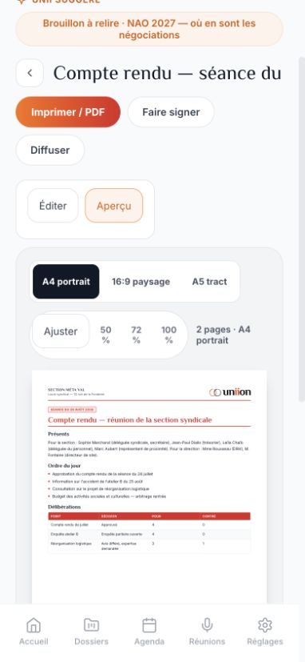
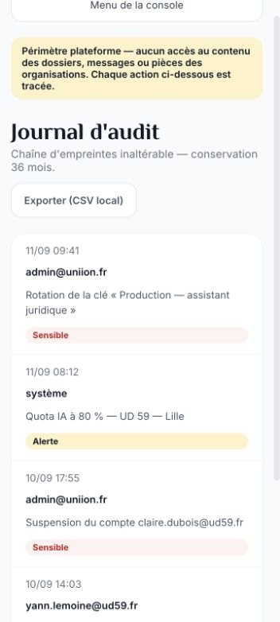

Responsive et UX mobile : corrections et validation
24 octobre 2026 — prototype local uniion. Modifications limitées aux petites largeurs (moins de 940 px), avec couleurs, typographies, contenus et fonctions conservés. Les règles d’impression restent distinctes des adaptations écran.
Résultats
- 17 écrans principaux contrôlés à 360 et 768 px : aucun débordement horizontal mesuré.
- 7 sections de la console admin contrôlées à 360 et 768 px ; nouveau passage des 7 sections après agrandissement des actions tactiles.
- À 390 px : conversation et document ; conversation également vérifiée à 430 px de hauteur.
- À 1024 px : accueil, messages, agenda, documents, adhérents et assistant, sans débordement mesuré.
- À 1440 px : géométrie de l’accueil identique à la référence avant correction, tolérance inférieure à 1 px pour l’animation.
- 69 tests automatisés réussis : 20 régressions, 30 tests étape 1, 15 corrections et 4 exports. Les 324 fichiers de référence sont conformes.
Corrections par constat
| Constat | Statut | Résultat |
|---|
| R01 | Corrigé | En-tête sur deux lignes, recherche dédiée, retour compact, accès Menu à tous les modules et à la déconnexion. |
| R02 | Corrigé | Titre de discussion prioritaire, actions sur une seconde ligne, hauteur ajustée au viewport visuel. Saisie mesurée jusqu’à y=343 dans une hauteur de 430 px. |
| R03 | Corrigé | Éditer / Aperçu sur mobile, outils d’ajout repliables, ajustement automatique à la largeur et zoom manuel avec défilement dans le panneau. Zoom mobile distinct du réglage desktop. |
| R04 | Corrigé | Commandes du mois adaptées, vue Liste par défaut sous 940 px, vue Mois conservée. Nouveau formulaire amené à y=140 et premier champ focalisé. |
| R05 | Corrigé | Menu admin repliable, fermeture après sélection, suppression de la largeur minimale de 640 px, journal en cartes. |
| R06 | Corrigé | Historique et nouvelle conversation accessibles à la demande ; conversation affichée en priorité. |
| R07 | Corrigé | Recherche visible, filtres avancés repliables, critères actifs conservés. Titres de documents hors ligne sur plusieurs lignes. |
| R08 | Corrigé sur les contrôles ciblés | Menu complet ajouté ; zones tactiles agrandies pour en-tête, édition, agenda, conversation, assistant et console admin. |
| R09 | À vérifier sur appareil | Défilement des dialogues borné à la hauteur disponible et prise en compte de visualViewport. Clavier réel, rotation, zoom d’accessibilité et confort tactile à valider sur iOS/Android. |
Parcours exercés
Menu complet vers les 17 modules, historique assistant ouvert/fermé, filtres adhérents, création agenda puis annulation avec focus, document existant → édition → outils d’ajout → aperçu → zoom 100 % → ajustement, conversation et saisie à faible hauteur, navigation entre les sept sections admin avec fermeture du menu.
Limites et reste à faire
Aucun blocage responsive observé dans ce périmètre. Il s’agit de dimensions de navigateur, pas d’une recette sur appareils physiques ni d’une validation exhaustive des 87 sections et de toutes leurs modales. La vérification réelle du clavier, des gestes, des zones sûres et du zoom d’accessibilité reste à réaliser sur iPhone/iPad et Android. Les branchements de production ne sont pas inclus.
L’impression native des deux pages reste validée par l’utilisateur lors du contrôle précédent ; aucune nouvelle impression native n’a été lancée ici. Les adaptations mobiles sont limitées au média écran.
Captures
Conversation — 390 px
Document — Éditer / Aperçu
Journal admin — 360 px Mesures détaillées · Audit initial avant correction